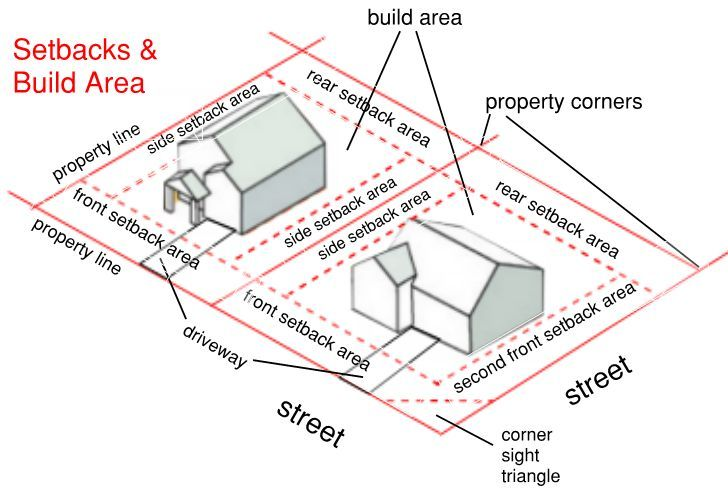
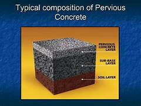

Setbacks & Parking → Infiltration → Recharge
Concrete replaces natural soil in urban areas. But setbacks can be used as infiltration zones.

Water flows from building & surfaces into setback areas

Water enters through setbacks & parking and moves downward into groundwater.
↓ Infiltration to Groundwater ↓
Normal Concrete: Runoff ↑ | Recharge ❌
Pervious Concrete: Infiltration ↓ | Recharge ✔